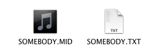
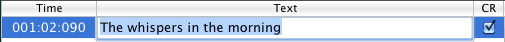
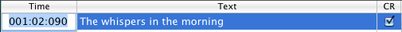

en bas pour activer le mode synchronisation.
en bas pour activer le mode synchronisation.Vous pouvez facilement mettre en forme la police, la taille et la couleur du texte karaoké en utilisant le panneau police ("Montrer polices" dans le menu "Karaoké/Police"). Le formatage est appliqué à la fois au texte et aux accords. La visibilité des accords peut être modifiée avec le menu "Karaoké/Accords".
Si l'option "Taille automatique" est activée, QMidi modifie la taille du texte en fonction de la hauteur de la fenêtre afin qu'un nombre constant de lignes sont affichées. Les accords peuvent être redimensionnés indépendamment en déplaçant le séparateur texte/accords.
Si cette option est désactivée (par défaut), les paroles sont sauvegardées en texte brut et mis en forme "à la volée" en utilisant le style karaoké/miroir actuel.
Si cette option est activée, le texte est
sauvegardé en rich text format ("rtf" ou "rtfd"). Vous pouvez mettre ce
texte en forme uniquement en mode édition.
NB: Lorsqu'il est ouvert, du texte stylisé avec la même couleur que l'arrière-plan est automatiquement réglé en noir ou blanc, selon la couleur de l'arrière-plan.
Avec le menu "Karaoké/Image de fond", vous pouvez ajouter une image d'arrière-plan à votre fenêtre karaoké. Vous pouvez aussi faire glisser une image depuis le Finder.
Vous pouvez également faire correspondre une image à n'importe quel fichier media:
Si un fichier karaoké a été créé sur d'autres plateformes, les caractères accentués ne s'affichent pas correctement avec l'encodage standard Macintosh. Pour règler ce problème, QMidi vous permet de choisir l'encodage de texte approprié pour n'importe quel fichier karaoké et de sauvegarder votre réglage dans la liste de lecture ou la bibliothèque. Vous pouvez modifier l'encodage par défaut dans la fenêtre Preferences.
Durant cette opération, un fichier texte sera créé dans le répertoire du fichier media, avec le même nom que votre fichier media, plus l'extension appropriée (txt, rtf, rtfd).

Ne jamais éditer du texte synchroniser en mode "Edition", sinon vous aller annuler les informations de synchronisation. La meilleure manière d'éditer du texte existant est la suivante:

La colonne "CR" est utilisée pour ajouter ou supprimer les retours à la ligne.
Le comportement du bouton "+" dépend du type de sélection:
QMidi ne permet pas l'édition directe de paroles incluses dans des fichiers MIDI/ID3. (MidiKit peut le faire sur des fichiers MIDI).
Pour cette raison, si vous choisissez "Synchronisation" dans le menu "Karaoké", un fichier texte sera créé automatiquement. Si l'option "Synchronisation par lignes" est sélectionnée, QMidi ne gardera que les marqueurs de synchronisation qui pointent au début des lignes.
Si vous travaillez sur un fichier MIDI, vous pourrez fusionner plus tard le texte édité en choisissant "Exporter le fichier courant" et en sélectionnant l'option "Fusionner texte".
en bas pour activer le mode synchronisation.Bien sûr, vous pouvez effectuer l'étape 4 quand le lecteur est arrêté. Il n'est pas nécessaire de synchroniser immédiatement tout le texte: vous pouvez ajuster la position des rangées à n'importe quel moment en revenant en arrière et en cliquant au bon moment. Toutes ces actions peuvent être annulées en utilisant le menu "Edition/Annuler".
Astuce: Option-Clic sur une ligne permet de déplacer la tête de lecture a la position correspondante.
Entrer dans le mode de synchronisation et cliquer le bouton "Edition" (crayon) pour activer l'édition manuelle.

La colonne "Temps" est formatée en mesure:temps:ticks pour les fichiers MIDI et HH:MM:SS:centièmes de secondes pour les autres media.